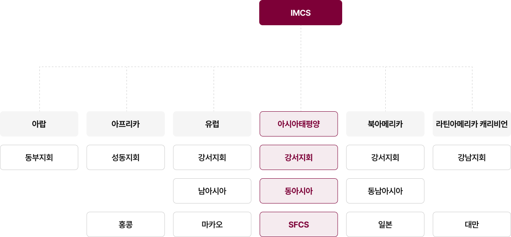
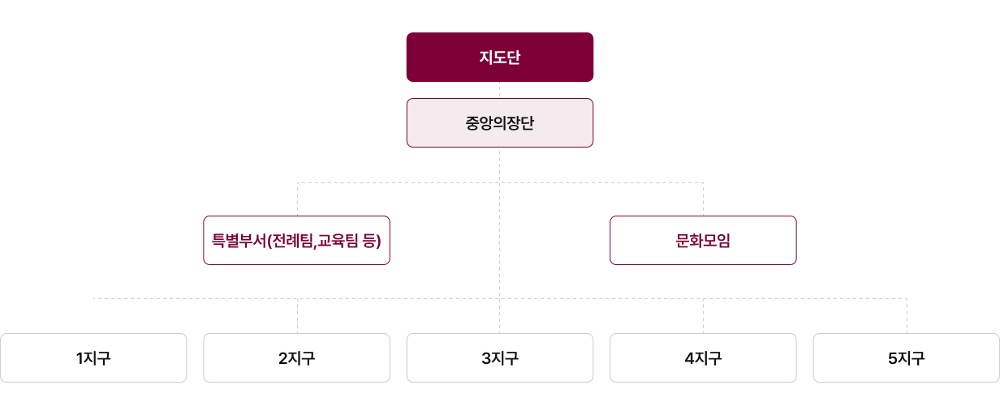

학생조직(IMCS)
International Movement of Catholic Students
학사회 조직(ICMICA)
International Catholic Movement for Intellectual Cultural Affairs


서울 소재 39개 대학의 가톨릭학생회가 참여하고 있으며 연합 활동이 가능합니다.
대학교명을 클릭하시면 세부 정보를 확인하실 수 있습니다.
전체 지구 보기
전체 지구 보기
1지구
2지구
3지구
4지구
5지구
전체 단위대 보기
전체 단위대 보기
가천대학교
가톨릭대학교
건국대학교
경희대학교
고려대학교
광운대학교
국민대학교
단국대학교
덕성여자대학교
동국대학교
동덕여자대학교
명지대학교
명지전문대학교
삼육대학교
상명대학교
서경대학교
서울과학기술대학교
서울교육대학교
서울대학교
서울대학교
서울시립대학교
서울여자간호대학교
서울여자대학교
성균관대학교
성신여자대학교
세종대학교
숙명여자대학교
숭실대학교
연세대학교
이화여자대학교
이화여자대학교
중앙대학교
한국방송통신대학교
한국외국어대학교
한국항공대학교
한성대학교
한양대학교
한양여자대학교
홍익대학교
서울 소재 의과대학, 의학전문대학원, 법학전문대학원의 가톨릭학생회 모임이 이루어지고 있습니다.